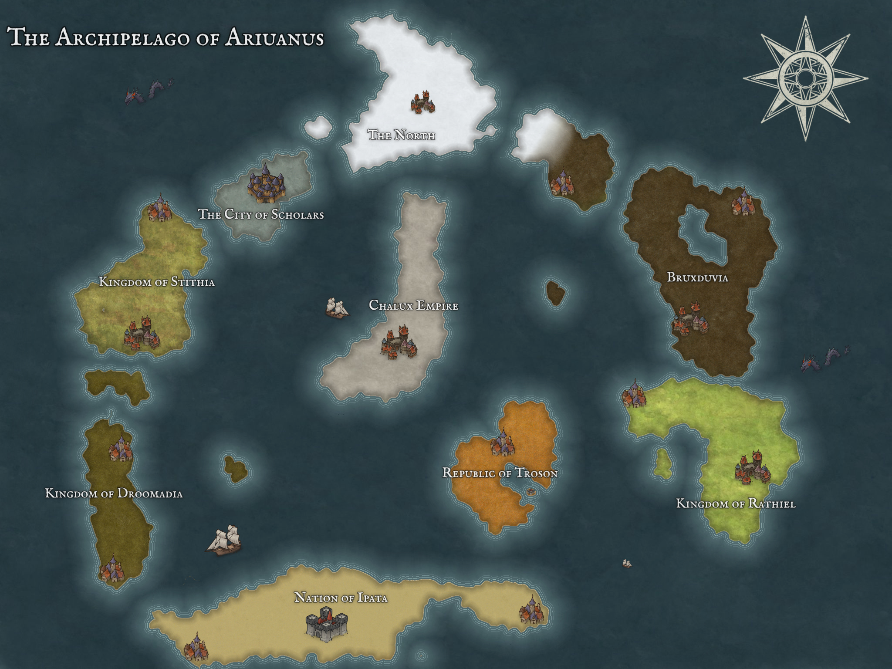

The Library of Ariaunus is a mystical place, located in ██████████. It is open to the public and can be easily accessed by ███████████████████████████
The world in which Ariaunus resides in is a wild, mystical place. Elves, dwarves and magic of all kinds is natural here. Gods are verifiable fact, demons are verifiable fears and gold is the lifeblood that fuels humankind. This is not a utopia, but nor is a dystopia. Most people live their mundane lives without much interaction to the arcane, but some do. Adventurers wield blades infused with lightning, priests call upon their gods for healing aid and wizards create fire from nothing.

Ariaunus is an archipelago made up of several principle kingdoms. Currently the year is 1492 A.A.I. (After Ascension of Iomadae), and the 9* kingdoms of Araiunus are:
*Despite homing no people or buildings, The North is still counted as a kingdom for ease.
At first impression, one would assume Ipata to be a harsh place. Most of the land is infertile desert, and the cities that do exist are surrounded by layers and layers of walls. Each wall is home to dozens of turrets, traps and murder holes. It looks as formidable as they come. But you would be wrong to expect the Ipatians to be anything other than warm and accepting. It is true that Ipata used to be the most defensive nation on the planet (and to an extent is still true today), but that war has passed. They won. And since then they have demilitarised and instead turned to philosophy and religion to guide them. They are an extremely friendly people, being one of the few nations to have relations with Troson. Unless you happen to be from the Chalux Empire. In which case, you should run.
Click on this for more info on IpataCalling Droomadia a kingdom is generous at best. It is mostly wasteland, and the few people who live there are constantly sick. It is a dying nation. At one point, the City of Scholars negotiated a deal with Droomadia to test new and exciting magics in their land. They did this as Droomadia was mostly devoid of intelligent life in the south, and the kingdom was suffering after leaving the Chalux empire. This worked great for a while, until a horrible accident occured. A young mage got too cocky, and unleashed an evil that cursed the land of Droomadia. The City of Scholars is adamant that its working on a solution.
Click on this for more info on DroomadiaThe newest nation in this continent, and the one whos still trying to find its legs. Its port cities were once vital to the flow off trade between regions. But ever since the Scholars have been inventing more effecient forms of transport, theyre relevance has died down. They revolted from the Chalux Empire 3 years ago, and the effects of such a harsh transition are still felt. The government is scattered, and the ports are effectively seperate entities to the town. A lot of trade passes through Troson, but people barely spend much time there, as soon to set off as they got there. As well, very little nations wish to actively have a relation with Troson, out of fear of the Chalux Empire, with the exception or The Kingdom of Rathiel and the Nation of Ipata.
Click on this for more info on TrosonUntil recently, this was the youngest nation. 238 years ago, it revolted from Bruxduvia and gained its independance. Originally, Rathiel was a land of natural beauty, with lush forests covering the landscape. During its time in Bruxduvia 80% of its forests were chopped down and used by Bruxducia. This has long pissed off the Rathilians, and after theyre independance, they began large works to reclaim the land for forest. Nowadays, about half of the land is covered by forest, while the rest is for people.
Click on this for more info on RathielBruxduvia is known for 2 things. The first, it is the birthplace of people. The first time something built a shelter and a fire was in Bruxduvia. The first language was spoken in Bruxduvia. The first art was made in Bruxduvia. And the first murder was done in Bruxduvia. It is an ancient land full of mystery of superstition. The people who live in Bruxduvia are tough, and for good reason. Countless things go bump in the night in Brixduvia. Famously, it was the only place that the Chalux Empire did not dare to conquer. That is not to say that the country hasn't shrunk over the years however. The North creeps more into their borders each year. And The Kingdom of Rathiel used to be a part of it too.
Click on this for more info on BruxduviaThe Chalux Empire (or what is left of it), used to be the world's most powerful military force. It used to hold The City of Scholars, The Kingdom of Stithia, The Republic of Troson and was invading the Nation of Ipata. They were successfully repelled by the Nation of Ipata, which scholars consider this to be the turning point for the downfall of the empire. This failed invasion left the coffers empty, and with no money they couldnt afford to keep a strong military presence in their conquered lands. These areas then rebelled one by one, leaving the great Chalux Empire a shell of what it once was. Although, hushed whispers speak of the new Emperor being obsessed with finding a certain artifact...but who's to say whats true and not?
The Chalux Empire does not have many good relations with anyone other than The Kingdom of Stithia. And god forbid a Chaluxite and an Ipatian meet...
This is the industrial powerhouse of Aurianus. It began claiming this title after The City of Scholars began to to outsource a lot of their production there. "It wouldn't do to have the city of scholars be full of horrible industrialisation would it???" is a famous quote from the Mage Extremis at the time. Fortunately for them, Stithia was more than happy to open its doors to their machines. The scholars give them money for their goods, and if the Stithians ever want something from the scholars, they can just rattle on about mining. Win-win. These days a large portion of the countryside is dedicated to mining and refining raw materials. The reigning queen has however been heard discussing the fact they are running out of natural resources... but perhaps this is just harmless chatter. The City of Scholars is also not the only country that outsources their production anymore. As such, Stithia is considered a neutral land, never taking active part in wars or disputes.
Click on this for more info on StithiaMagic is very much real in Ariaunus and The City of Scholars is proof. This city is THE city to be for all mages, archaeologists, scientists, librarians and scholars of any kind. The vast majority of the peoples knowledge on any subject can be found here. Interestingly, gold and traditional currencies are not used here. Instead you pay everyone in information. Whether that be gossip, scientific fact, a new legend or what you had for lunch depends on what youre trying to get. For example, a dinner at an inn will cost you a piece of idle gossip about someone from your hometown, whereas trying to buy a whole airship will run you a secret you have never told anyone. Knowledge is king and queen in the city of scholars, so remember to bring some with you.
It is ruled over by a council of elders, one representing each major branch of study in the study. For example, architecture, magic, history, ancient history, history of magic, magical history (very different), plumbing, air transport, sea transport, land transport and more.
A cold and inhospitable land to all but the ice dragons and trolls that call it home. Snow stretches as far as the eye can see in all directions. There has long been rumours of people going there and never coming back, or coming back blind, but they are largely thought to be the words of madmen and children looking to scare their friends. There is a famous legend that states that The North used to be the most advanced civilisation in the lands, and the birthplace of the study of magic. But one day, a mage got too greedy and unleashed a magic that reduces their cities to ash and coated the lands in freezing cold, leading to how it is today.
Click on this for more info on NorthAbadar is the god(dess) of cities, law, merchants and wealth, but also of secret keeping. Aristocrats, lawyers and governments frequently pray to Abadar for guidnace in their work. Outside of this, many travellers pray to Abadar in the hopes that they won't get hurt travelling through cities. Often, people conflate Abadar with virtue and justice, but Abadar is the god of keeping secrets for a reason....
Click on this for more info on AbadarArazni is the god(dess) of freedom, protection, self-determination and survival at any cost. They were once a mortal champion who was captured and tortured for a very long time. They did not capitulate and the sheer force of their will eventually ascended them to godhood. The downtrodden in this world find solace in Arazni's light on the coldest of nights.
Click on this for more infor on ArazniAsmodeus is The First, the Dark Prince and a hundred other monikers bestowed on them over the centuries. Being the god(dess) of tyranny, pride and oppression, it is hardly surprising that bullies and corrupt government officials pray to them for guidance. But their prayers are not all filled with hatred. Asmodeus is also teh god(dess) of contracts, and merchants will frequently swear on Asmodeus for their honesty.
Click on this for more info on AsmodeusIt is not fully correct to say Calistria is the god(dess) of lust, revenge and trickery - they are simply aspects of herself, extentions of their being. As such, they are incredibly quick to switch sides, often not even doing so at benefit to themself. Instead they betray simply for the joy of the game. However, they are never one to forget a slight, so be wary about cursing them out when you think they aren't listening.
Before Cayden became the god(dess) of alcohol, glory and the oppressed, they began life as a humble adventurer, sweeping the lands with a blade in their hand and honor in their heart. During one heavy night of drinking, increasingly challenging dares resulted in Cayden ascending to godhood. No one was sober enough to remember how.
Click on this for more info onAs the other gods set their eyes on the primordial planet, Dresna set their eyes on the stars. They made the north star as their home, a beacon for all in the night and the first gift to mortals. Dresna protects those that travel at night and it is a tradition in parts og the globe for children to sing songs to Dresna before going to sleep.
Click on this for more info onThis diety is the god(dess) of family, farming, hunting and trade. Their control over nature only goes so far as what can be tamed. Wild nature lays no loyalty to Erastil. Erastil is worshipped commonly across the lands as families everywhere wish for protection and good favor. The only god that does not wish for their followers to go out and spread the word, instead opting for a quiet family life.
Click on this for more info onClad always in heavy iron armour, this god(dess) of battle, strength and weapons has no time for thosse not on the battlefield. Warfare is the name of the game with this one, and as long as there is Gorum, there will be fighting.
Click on this for more info onWhile, Erastil represents tamed nature, Gozreh is the oncoming storm, the wildness and ferocity of nature. Every bear attack, tsunami or wild dragon is an extention Gozreh's will. Most of the time, they are simply content to just enjoy existance, but their temperment is fickle and known to change rapidly.
Click on this for more info onOriginally, this god(dess) of honor, justice, rulership and valor was but a paladin. Due to their heroism, Arodean, the previous god the aforementioned ascneded them to be his herald. Upon his demise, Iomadae took over. As such, They are one of the youngest gods.
Click on this for more info onWhat was once a humble monk, ascneded to the god(dess) of history, knowledge and self-perfection. Their followers wish to follow in their footsteps and reach enlightenment. Scholars and historians also frequently pray to Irori for guidance.
Click on this for more info onLamashtu revels in aberrance. The god(dess) of monsters and nightmares despises staticness in life. They strive for change, which frequently comes in the form of monsters with far too many limbs. But they are also worshipped in part by trans people across the land, who view their doctrine of changing oneself to be validating.
Click on this for more info onThe goddess of night, rats and thieves was once an ordinary rat, but upon consuming the flesh of the dead god of the moon, Tsukiyo, they ascended, and stole the domain of the night. Lao Shu Po will shroud thieves in the cover of night. They do not wish for either law nor chaos, instead they simply wish to survive and thrive.
Click on this for more info onLymaris is the god(dess) of storytelling. They are said to be present in every wtory told, and the documenter of stories. They live in a vast library that expands with each action taken. This makes them a pseudo-historian although they would never refer to themselves this way. They are viewed as a neutral source, taking in stories of the good as well as the bad, but never picking one over the others. Stories tell of Lymaris wandering the earth in search of the perfect story. To tell a story, is to worship Lymaris.
Click on this for more info onThe god(dess) of magic bears 2 faces. The first half wishes for the destruction of the world, to wipe the slate clean, while the other hopes to protect and educate the world. Statues and iconography depicting this diety will often only show one face, or highlight one at the least, depending on which aspect of the god they wish to invoke. Unsurprisingly, worshipped by scholars.
Click on this for more info onThere is not much knwn about the god(dess) of greed, murder, poison and secrets, and purposefully so. All that is known is that they were once a mortal, and ascended somehow. Even other gods have little knowledge to offer on Norgorber. To know anything about Norgorber is to be among their most trusted apostles.
Click on this for more info onNo being in the universe remembers a time before the god(dess) of birth, death, fate and time existed. They spend their days trying the souls of the dead in order to guide them to their correct afterlife, and also sending new souls out to be born in the world. Everyone has met Pharasma, and everyone will one day meet them again. Despite, being able to see all of time in an instant, Pharasma empahsizes that free will does in fact exist, and can change what they see. Whether or not this is true is unknown.
Click on this for more info onThe god(dess) of destruction, disaster and wrath is unique in that they have no holy scripture. Followers instead seek mindless destruction in the hopes of one day freeing their god(dess) from their chains.
Click on this for more info onFor reasons that should be obvious, the god(dess) of healing, honesty, redemption and the sun is one of the most widely worshipped dieties. They are known for their great kindness and generosity for powering the sun, and providing healing magic to mortals.
Click on this for more info onThe god(dess) of art, beauty, romantic love, music, peace and queerness is a docile being. They wander the earth spreading peace and love wherever they tread. Often they are depicted as a bird with rainbow feathers, which is why the queer community uses a rainbow flag to identify themselves.
Click on this for more info onTorag is the god(dess) of the forge, community, protection and strategy. They value planning on the battlefield, protecting and caring for your loved ones, and the act of creation. Many master craftsmen pray to Torag each day.
Click on this for more info onFollowers of the god(dess) of disease, gluttony and undeath do not fear aging or death. They believe that as long as they live lifes of indulgence, their god(dess) shall protect them. Urgathoa themself was once a mortal, but murdered the psychopamp sent for them by Pharasma and tore themself from the clutches of the afterlife with such will they ascended.
Click on this for more info onThe god(dess) of darkness, envy, loss and pain is in stark contrast to their sibling, Shelyn. They are often attributed as the ones who crafted the chains that bind Rovarugg. Legends say that once they left this universe and wandered for milennia. When they came back they were colder and more distant, before locking themselves away in study.
Click on this for more info onData has been stricken from the Library in accordance with the order passed by the Spoken Word.